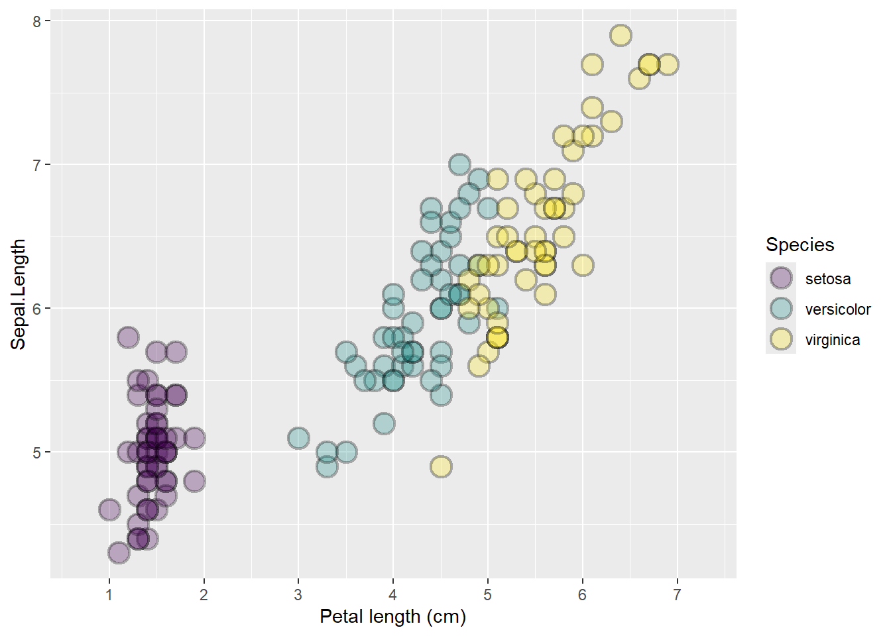
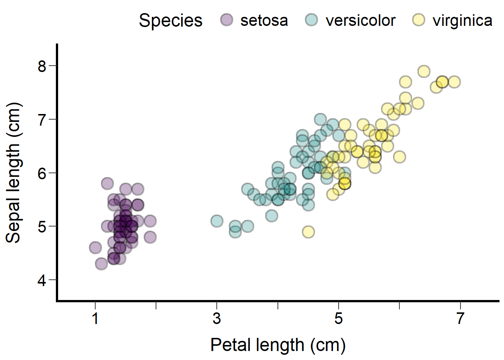

── R CMD build ─────────────────────────────────────────────────────────────────
* checking for file 'C:\Users\Bajcz\AppData\Local\Temp\Rtmp8IDoTs\remotes2d4c14969af\MAISRC-ggplot_plus-76e8752/DESCRIPTION' ... OK
* preparing 'ggplot.plus':
* checking DESCRIPTION meta-information ... OK
* checking for LF line-endings in source and make files and shell scripts
* checking for empty or unneeded directories
Omitted 'LazyData' from DESCRIPTION
* building 'ggplot.plus_0.1.2.tar.gz'
Guide to the ggplot.plus package
Preface
This guide introduces the ggplot.plus package—a collection of tools developed by Dr. Alex Bajcz, Quantitative Ecologist at the Minnesota Aquatic Invasive Species Research Center (MAISRC) at the University of Minnesota. These tools provide evidence- and consensus-based improvements to many of ggplot2’s default design choices.
The guide is neither exhaustive (some features may be omitted) nor prescriptive (nothing here is “objectively best”). Instead, it offers a practical overview of how the tools in this package can enhance standard ggplot2 graphics with minimal hassle—even for users with limited knowledge of ggplot2’s inner workings.
At its core, ggplot.plus re-imagines the default aesthetics of ggplot2. While a typical one-line ggplot() call can yield a functional graphic, that default output often falls short of modern best practices in data visualization, including with regards to several issues of accessibility.
Of course, these shortcomings can be addressed using base ggplot2 tools like theme(), scale_*(), and geom_*(), but doing so requires hard-won knowledge of how these tools work and can be tedious to implement even when you have the knowledge to do so. Plus, even if one has the technical know-how, not everyone is familiar enough with the tenets of data visualization to know what to change and how. The ggplot.plus package is designed to help users of all experience levels start from a more polished and accessible foundation—without sacrificing the flexibility to experiment or fine-tune later.
Accessibility is a major design goal of the package. Many ggplot.plus defaults are crafted to meet basic accessibility standards, and this guide will attempt to highlight those cases when relevant.
To be clear: ggplot.plus is not a replacement for making careful design choices, artistry, solicitation of feedback, or understanding your audience’s needs and capabilities. It’s meant to be a better launchpad—one built to save you time by starting you in a well-intentioned design space from the outset.
While the design choices baked into these tools ultimate reflect Dr. Bajcz’s professional judgments, they are grounded in a thorough review of the last several decades of the data visualization literature, so it’s key to note that they do not primarily reflect his personal opinions about good graph design (though they also do!).
Without further ado, let’s see the tools contained within this collection in action!
Getting Started
To begin using the ggplot.plus package, you’ll first need to install it from GitHub using the devtools package:
Then, load it alongside ggplot2:
Once loaded, you can start layering in the “plus” tools to improve your plot design with minimal effort.
Overview of the Package Philosophy
The ggplot.plus package is guided by three core principles:
Better Defaults:
Many default settings inggplot2are functional but sub-optimal from design and accessibility standpoints.ggplot.plusattempts to improve upon these—adjusting colors, shapes, gridlines, spacing, typefaces, etc. to yield cleaner, more accessible visuals from the outset.Override-ability:
All defaults set byggplot.plus’s tools can be overridden by the user, either through standardggplot2syntax or using_plusvariants with arguments. You’re rarely (if ever) forced to keep anything these tools generate.Modularity:
Each tool inggplot.plusis designed to be additive. You can use just one of them (e.g.,theme_plus()orgeom_plus()) or combine them as needed.
Key Tools and Their Roles
The package introduces several new functions to add to your base ggplot2 arsenal. These include:
| Function | Purpose |
|---|---|
geom_plus() |
A general wrapper for geoms with improved default aesthetics |
theme_plus() |
A better base theme with improved default settings for size, spacing, legend placement, and much more. |
scale_x/y_continuous_plus() |
Drop-in replacements for scale_x_continuous() and scale_y_continuous() that will attempt to ensure axis breakpoints and limits are appropriate for fully labeling these axes. |
yaxis_title_plus() |
A function for relocating the y axis title from its normal, less accessible location and orientation. |
palettes_plus() |
Converts ggplot2’s default color palette for color and fill aesthetics over to viridis’s more accessible palettes for the session. |
gridlines_plus() |
Adds subtle, clear gridlines only when and where really needed. |
Each of these is discussed in more depth in the sections that follow, along with examples.
A Standard ggplot for Comparison
Let’s start by creating a simple ggplot2 plot to use as a reference point. The code below generates a scatterplot of petal length vs. sepal length for iris flowers from three species. These data come from the iris dataset, which is automatically included in every installation of R. Points are colored by species:

This graph is simple and effective—perfectly suitable for exploratory work or sharing with colleagues for a hot take. However, for presentation or publication, it falls short of several well-established design and accessibility best practices. Some of the key issues include:
Text size: The default font sizes for axis and legend text are too small for easy reading, especially for those with visual impairments. A common rule of thumb is: if the text feels almost too large to you (assuming you have “standard” vision), it’s probably just right.
Point size: The points are also quite small, which can hinder visibility for some users. The same rule about size applies here too—they should be larger than you think you need them.
Color palette: The default “rainbow” palette lacks luminance (how “bright” or “dark” the hue is) variance. For someone who is colorblind (especially with red-green color blindness), the red and green shades used are indistinguishable. For those with no color vision at all, or for those using black-and-white viewing technologies, all three hues would be difficult to differentiate.
Foreground/background contrast: While contrast between points and background here is ok, it could be improved by using darker point colors and/or a lighter plot background. As noted above, it would also be helpful if the different color shades used for points contrasted better with each other too. Strong contrast is critical for accessible and quickly interpretable design.
Whitespace and layout: Default
ggplots often suffer from cramped layouts. In particular, spacing is often tight between:Axis titles and their axis labels
Elements within the legend
Axis labels on densely labeled axes (not an issue here, but often a problem)
Adding more void spacing between elements helps readers visually parse and process the plot more efficiently, especially those with cognitive or visual impairments.
Axis titles: Axis and legend titles and labels will default to the column names/values found in the data set. These are often formatted for coding (e.g., no spaces, inconsistent capitalization) rather than for human readability or interpretation. They should have standard spelling, spacing, and punctuation, and they should be human-readable, with units (if applicable).
Gridlines: The research on the merits of gridlines is, admittedly, mixed in some ways. They:
Can reduce contrast between themselves, the background, and the data elements as well as increase cognitive load.
May slow down interpretation and clutter the plot.
Are especially unhelpful when aligned with categorical axes.
On the flip side, they’re familiar to novice readers and can help with estimating exact values, where this is required. However, it should be noted that most experts agree that graphs are not the most efficient device for conveying exact values–text, tables, and sharing the raw data files are all superior. Graphs out to primarily be about “vibes!” Even when they are needed, though, research has shown that gridlines can and should be faint and infrequent.
Incomplete axis labeling: Axes should generally include tick marks and labels at both ends to align with reader expectations (especially those of more novice readers) and to aid in efficient comprehension. Here, both axes are missing outermost labels, which makes them feel visually “unfinished.”
Overplotting: When data points partially or wholly overlap, it becomes hard to judge how many values are present in that location. This limits the reader’s ability to interpret density.
Vertical y-axis title: Text rotated 90 degrees is harder to read and less accessible—especially for dyslexic users, non-native readers of the language, users with motor or visual impairments, and those with certain technological limitations. The y axis title is almost always rotated 90 degrees in scientific graphs, despite these facts. The y axis tile is also less prominent when placed in the left margin, where it defaults to. Since many graphs are “about” the y-axis variable, it deserves a more prominent location so that readers encounter it first.
Tick marks: The tick marks are small and easily lost. More prominent ticks improve usability and help distinguish axes from the data region.
Legend placement: The default legend location in the right-hand margin is space-inefficient and relatively hidden at the plot’s side. Most readers scan left to right, top-to-bottom, so the legend information should be either integrated (e.g., through direct labeling inside the plotting area) or the legend should be placed more prominently and compactly somewhere else.
This list isn’t an exhaustive list of the design aspects of this graph that someone might object to on some grounds or another, but it illustrates how even a simple ggplot() often requires many tweaks to meet accessibility, clarity, and design standards to publication-quality.
Colorblind-Friendly Palettes
Fortunately, the viridis package—bundled with ggplot2—includes several colorblind-friendly and broadly accessible palettes. These palettes vary not just in hue (i.e., the base “color” like red, green, or blue), but also in luminance (light vs. dark) and sometimes saturation (intensity or “grayness” of the color). This multidimensional variance makes the colors distinguishable across a range of visual impairments and viewing conditions.
The ggplot.plus package includes a convenience function, palettes_plus(), that activates a carefully chosen default viridis palette for use whenever the color or fill aesthetics are required by your subseqent plots:

By default, viridis spans from dark purple to light yellow, passing through blue, green, and teal. However, palettes_plus() excludes, by default, both the darkest purple and the lightest yellow—because these shades can lack contrast against common fore- or background elements that are black and white, respectively. As a result, the remaining palette maintains both accessibility and visual appeal in most contexts.
However, you can easily adjust this behavior using the begin and end parameters, which both range from 0 to 1:
begin = 0would include the dark purple portion of the color range.end = 1would include the light yellow portion.

In this example, we’ve re-enabled the purple end of the palette. This color contrasts well against the light background, unlike the light yellow, which can be harder to distinguish.
Other Palette Options
viridis isn’t your only option in the viridis package. You can choose from eight palettes, labeled “A” through “H”:
A = magma
B = inferno
C = plasma
D = viridis (default)
E = cividis
F = rocket
G = mako
H = turbo
If you want a more vibrant “rainbow-like” palette that’s still relatively accessible, turbo (“H”) is a good choice:

Note: Turbo has two dark regions (at both ends), which may be indistinguishable to users with total or partial colorblindness (< 1% of the population). To mitigate this, you can trim one half of the palette using begin or end values around 0.5 to include only the “red” or “blue” side.
A Few Usage Tips
palettes_plus() only needs to be called once per session (unless you want to change the palette again). It sets the default color and fill palettes globally for all ggplot2 plots thereafter.
Let’s now change the palette to a modified viridis with the darkest shades removed:
This gives us a graph that includes light yellow points on a light gray background, so the contrast is not sufficient—that’s something we’ll fix in the next section.

Geometries with Improved Defaults
One of the core tools in ggplot.plus is geom_plus(). This function is designed to replace most of the standard geom_*() function calls you’d typically use in a ggplot2 pipeline.
It has one required argument: geom, which should be either the first argument or explicitly named. The value corresponds to the portion after the underscore in the geom function you’d normally call. For example:
"point"forgeom_point()"line"forgeom_line()"bar"forgeom_bar(),
And so on.
So, to recreate our scatterplot using geom_plus(), we simply swap out geom_point() with geom_plus(geom = "point"):

The primary purpose of geom_plus() is to apply better default parameters that address common design concerns—especially those related to accessibility.
In this example:
The points are made larger and thus easier to parse.
The default shape changes from 16 to 21.
This latter change is important because shape 16 only uses the color aesthetic while shape 21 supports both color (for the stroke/outline) and fill (for the interior). This gives us more flexibility in design.
By default, the interior is set to transparent, resulting in hollow circles. This allows partial overlaps between points to be visually distinguishable—though, of course, total overlap is still not discernable. We’ll present some ideas for fixing that later on.
Improving Contrast with the Fill Aesthetic
If we switch from mapping species to color to instead mapping it to fill, geom_plus() uses a black stroke color by default. This fixes the earlier issue where light yellow points lacked sufficient contrast with the light gray background:

Because the fill colors are now surrounded by black outlines, our eyes compare the fill color to the black directly next to it rather than to the background, resolving the contrast issue.
Even though dark purple can be distinguish from a black stroke, that’s not a problem here, since the stroke doesn’t encode any data. So, if we want more color options, we can restore the full range of the viridis palette:

There are two broadly effective options for using color with point-based geoms that may feature overplotting:
- Transparent fill + stroke color
- Map the discrete variable (e.g., species) to `color`.
- Use a transparent fill and dark stroke colors for contrast.
- Advantage: overlapping points are visually distinguishable due to the hollow centers.- Dark stroke + colored fill
- Map the discrete variable to `fill`.
- Use a consistent dark stroke to improve contrast between fill and background.
- Advantage: strong contrast, especially on light backgrounds.In the latter case, overplotting will still be an issue without one more tweak: We can make the points semi-transparent so that points that stack on top of one another “bleed through” each other and result in a darker point (colors will “blend” as well, if applicable):

Setting alpha = 0 would make points fully transparent (invisible), while alpha = 1 makes them fully opaque. At alpha = 0.3, points remain sufficiently visible but points in dense regions layer on top of each other and become darker, indicating density.
Note: this approach also dims the black strokes, so contrast could still be a concern for low-vision readers. Always consider the balance between legibility and density encoding and consider whether a scatterplot is the best way to represent your data!
Detour: Mapping Visual Channels in ggplot2 (A Review)
In ggplot2, you can control the visual appearance of your graph using aesthetics, which connect visual channels (like position, color, size, or fill) to either data variables or fixed values.
There are three (partially overlapping) ways to assign aesthetics:
Global mapping: Inside
aes()in the mainggplot()call. These mappings apply to all layers (geoms) by default.Local mapping: Inside
aes()within a specificgeom_*()function. These only apply to that one layer.Constant values: Set inside or outside
aes()within a geom or inside ofaes()withinggplot(). These are fixed and override any mapping at or above their same level.
This system gives you flexibility, but it can be confusing—especially for new users. Let’s clarify with an example that uses two geoms: a boxplot overlaid with jittered points (jittering randomly shuffles their location):

Here’s what’s happening:
Global mappings of
x = Speciesandy = Sepal.Lengthapply to both the boxplot and the jittered points.The fill aesthetic is mapped to
Species, but only locally within the jittered points layer, so the boxplot is unaffected.The alpha aesthetic is set to a constant value (0.3), again only locally for the jittered points.
If you map the same aesthetic in multiple places (e.g., globally and locally), the local mapping always wins—it overrides any global specification for that layer. Also, if you try to map an aesthetic to both a variable and a constant, the constant usually takes precedence.
How This Applies to ggplot.plus
All of the same rules apply when using ggplot.plus tools. You can:
Map aesthetics globally or locally
Use aesthetics to variables in your data set or to constant values
Combine the approaches as needed–conflicts will resolve as they normally do in
ggplot2.
Here’s a similar plot with a few tweaks to illustrate this further:

In this version:
Fill is now applied to both geoms, since it’s mapped globally.
Color is also mapped globally but overridden locally in the boxplot layer (so boxplot outlines are blue, regardless of
Petal.Length).
Many common base geoms are already implemented in geom_plus(). To see a list of those currently available:
[1] "point" "jitter" "count" "boxplot" "violin"
[6] "bar" "col" "histogram" "line" "freqpoly"
[11] "segment" "abline" "hline" "vline" "curve"
[16] "smooth" "area" "ribbon" "crossbar" "errorbar"
[21] "linerange" "pointrange" "density" "dotplot" If you’d like to see additional geoms supported, you can request them using the Issues feature on the package’s Github page.
Improving Axes
Let’s return to our earlier scatterplot:

There’s still room for improvement, including with the axis titles and labels. A key first step is to make the axis titles more human-readable, intuitive, and complete by including units. You can do this using the scale_*_*() family of functions in ggplot2:

This works, but the x-axis still lacks labels near its endpoints—a common issue with ggplot2’s default breaks determination. You can fix this using scale_x_continuous_plus(), which automatically adjusts breaks and limits to ensure label coverage near the extremes:

The axis is now expanded to start at 1 and end at 7, with breaks still chosen to be regular and “pretty,” as in ggplot2.
As with the base function, you can still pass arguments like name, expand, transform, or labels to the _plus() version. However, you cannot manually set breaks or limits, since those are managed internally by the function. If you need full control over those, revert to scale_x_continuous() instead.
If the resulting labels feel too frequent, here’s a trick: You can suppress some of them by setting custom label text—for instance, removing every other label while keeping the tick marks:

This reduces cognitive load while preserving the visual scaffolding the ticks provide. Optional, but a nice touch!
Unsurprisingly, there’s a matching function for the y-axis:

Here, the y-axis expands downward to include a break at 4, making the axis appear more complete and aiding interpretation.
Improving the Theme
Much of ggplot2’s visual styling is governed by the theme() function, which controls over 100 parameters affecting how a plot looks and feels. That flexibility is powerful—but also overwhelming for beginners.
To help with this, ggplot.plus includes theme_plus(), a custom version of ggplot2’s theme() function that sets more publication- and accessibility-friendly defaults out of the box:

This version of the theme makes a number of visual improvements:
Larger text for better readability.
Increased spacing between key elements (like legend keys and axis titles and labels).
Thicker axis ticks for greater visibility and distinguishing.
Removes gridlines by default (but see next section for how to selectively reintroduce them).
White background for high contrast (though note this can increase eye strain in some cases).
Black axis lines at the bottom and left (but no top or right borders, which typically carry no data).
Legend moved above the plot as a horizontal strip—space-efficient and more likely to be seen early by the reader.
All text rendered in black, rather than the default dark gray for some elements, to maximize contrast.
Of course, everything is still customizable. If you don’t love a particular choice—say, the thickness of the axis lines or the legend’s location—you can adjust them, same as you normally would:

You can even restore the right-side legend if you prefer—but it’s wise to adjust spacing too if you do:

Like the rest of the toolkit, theme_plus() is meant to be a smart starting point—not a final destination. It won’t be ideal for every plot or context, but it’s designed to save you time and steer your design toward best practices from the start.
Y Axis Title Orientation and Location
Our graph is nearly there—but one issue remains: the y axis title is still vertically oriented and tucked away in the left margin. Let’s fix that.
In base ggplot2, you can reorient the title using hacky adjustments like line breaks and theme tweaks:

This works reasonably well—it’s readable and relatively simple to implement, if you know how (a big if for many beginning ggplot2 users!). But it has limitations:
It steals horizontal space from your data.
It keeps the label in a relatively unprominent location.
It doesn’t scale up well to longer axis titles or those with long, unbreakable words.
To get around these challenges, ggplot.plus includes yaxis_title_plus(), which repositions the y axis title to the top left corner of the plotting area, aligned above the y axis and left-justified:

This small adjustment brings a number of benefits:
Prominence: Readers of left-to-right, top-to-bottom languages naturally start in the upper-left, so the y axis title now gets seen early.
Readability: The title is horizontal, making it easier and faster to read for all kinds of people in all kinds of contexts.
Space efficiency: Instead of taking up horizontal room, the title sits in a narrow horizontal band above the plot, freeing up the core of the graphing area for your data to shine.
Title dual-purpose: For graphs that don’t have a main title (which many design experts recommend omitting because, at best, titles tend to do what y axis titles and captions already do but worse), this functions sort of like one but with a much tighter focus, which can be beneficial for novice graph readers.
Some may find this placement unconventional, but it’s backed by decades of advocacy from the data visualization community (dating back to at least the 1990s). So while it’s optional, it’s not a fringe or new idea! Give it a try–you might just like it better.
Thoughtful Gridlines
One potentially controversial design choice in ggplot.plus’s theme_plus() is the removal of gridlines. While some readers rely on them or expect them, many others find them distracting or visually cluttering.
If you’d like to restore them, you could manually add them back using theme() or theme_plus(). But there’s a better option: gridlines_plus(). This function selectively reintroduces only the major gridlines (not minor ones), in directions mapped to numeric variables (not discrete ones), and renders them faintly:

These gridlines default to color = "gray90", offering a low-contrast, high-compromise solution:
They’re just visible enough for those who need help estimating values or otherwise want to use them, according to empirical research.
But they’re light enough to fade into the background for everyone else.
Research has shown that faint and infrequent gridlines can improve comprehension for some readers without drawing undue attention or degrading visual contrast. That’s what we’re aiming for here.
Want to customize them? gridlines_plus() allows adjustments to linetype, color, and linewidth. This flexibility ensures you can match gridlines to your graph’s tone and complexity without sacrificing readability.
Faceting With ggplot.plus
Faceting—splitting a plot into small multiples based on one or more discrete variables—is a core feature of ggplot2, and it works with the tools provided by ggplot.plus:

As this example shows, most features in ggplot.plus are compatible with faceting, though a few require some extra thought.
For example, using yaxis_title_plus() with facets technically works, but the result may not look ideal:

Here, the y-axis title ends up above the facet labels, where it’s disconnected from the axis it describes.
There are two potential workarounds to this. The first would be to facet by rows instead of columns. This restores a more natural association between the y-axis title and the data:

Another option would be to relocate the facet labels to the bottom of the graph so they aren’t competing with the relocated y axis title:

This also works, but a third option would be to suppress the facet strip labels entirely and instead retain the legend:

Of all the core features of ggplot.plus that are likely to intersect strangely with faceting, yaxis_title_plus() probably tops the list. But, even then, you’ve got many options available to choose from.
Side-note: Transparency in the Legend Keys
You may have noticed that the legend keys—the little circles in the legend that explain fill color—are also semi-transparent, just like the plotted points. That’s because the alpha value is being applied to both the points and their legend representations.
This behavior isn’t specific to ggplot.plus. In base ggplot2, legend keys inherit aesthetics unless you override those aesthetics. Here’s one clean way to make the legend keys opaque while keeping transparency in the plot itself:

Placing alpha = 0.3 inside aes() helps ggplot handle alpha in the legend differently. Then, scale_alpha(guide = "none") removes the alpha guide from the legend to prevent it from being confusing.
Known Issues
There’s a known limitation when using yaxis_title_plus() alongside a top-positioned x-axis. The relocated y-axis title will end up in the same horizontal “row” as the top x axis labels, causing them to clip into each other:

If a top x-axis is important for your graph, you can use the location = "bottom" option in yaxis_title_plus() to relocate the y title beneath the plot instead:

It’s a bit unorthodox visually, but it works! If you duplicate the x-axis on both top and bottom or have a secondary x axis on the top, however, you won’t be able to relocate the y-axis title easily. In that case, the best fallback may be to stick with the horizontal y-axis title broken across as many lines as possible using line breaks (\n).
Idealized scatterplot for reference
Here’s the final, cleaned-up version of our scatterplot using most of ggplot.plus’s tools together: